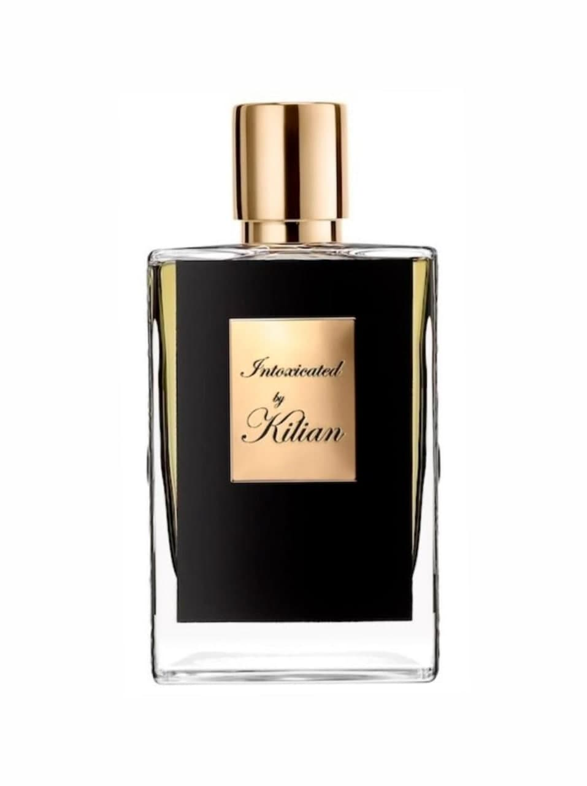
KILIAN PARIS
Intoxicated Refil, 50 ml
Perfume water is equally well revealed on women and men. It was created in 2014 and belongs to the aromas of the spicy fougere group. Acquaintance with the composition begins with a note of spicy cardamom. Gradually, cinnamon and nutmeg are replaced, and a persistent and long-lasting trail envelops with an expressive coffee note. The kit includes a pipette, a funnel, a sprayer and a mini bottle
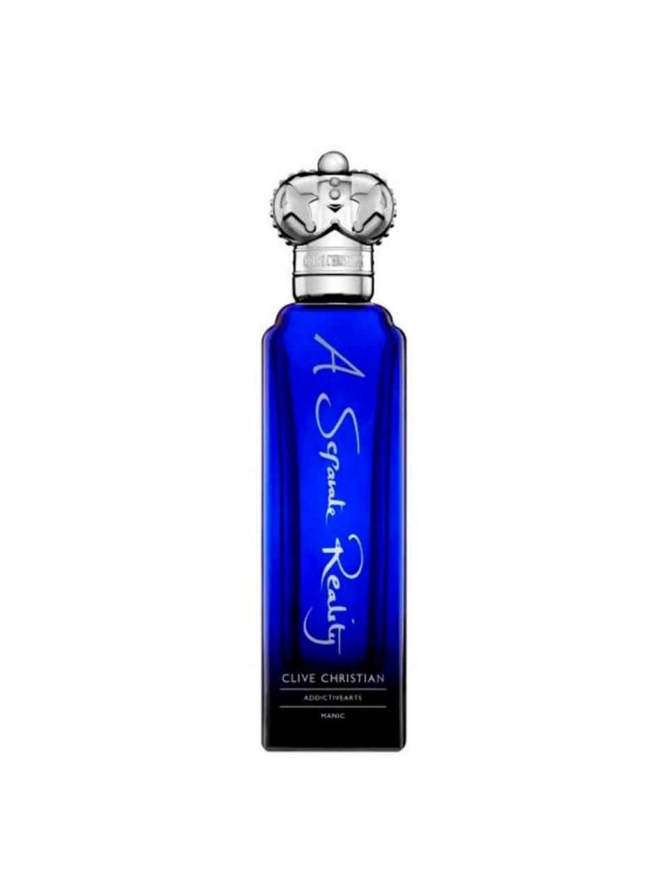
CLIVE CHRISTIAN
Perfume water Manic A Separate Reality , 75 ml
Perfumers have enclosed a complex oriental-fougere composition in a bottle. The rich aroma is built on green notes of mint and lavender, smoky chords of incense and mastic wood, as well as woody sandalwood motifs, which are warmed by the sweetness of red berries, powdery shades of vanilla and the warmth of genuine leather.
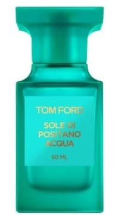
TOM FORD BEAUTY
Eau de toilette Sole di Positano Acqua, 50 ml
The rays of the sparkling sun, luxurious plants, the landscape spread out before your eyes... Sole di Positano Acqua Tom Ford embodies the Italian Amalfi coast — and all its incredible splendor and refreshing lightness. A new, brighter version of Sole di Positano, striking with a luxurious splash of the aroma of citrus sparkling in the sun. The magnificent green citrus-floral composition opens with a virtuoso combination of Italian bergamot and petitgrain orange oil with accents of lemon and mandarin.
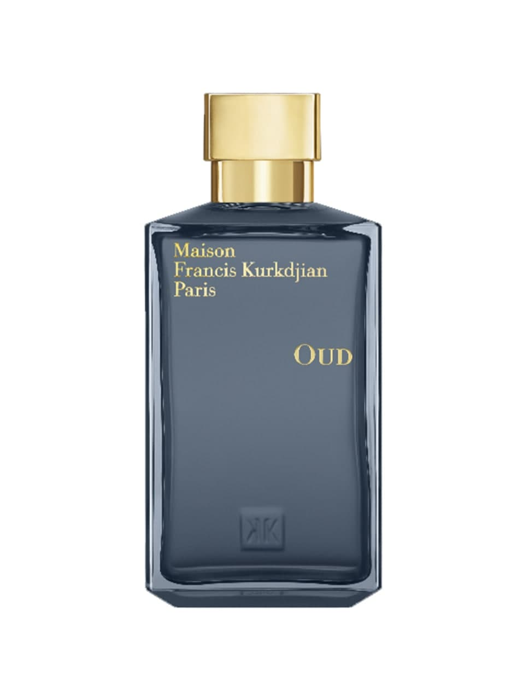
MAISON FRANCIS KURKDJIAN
Perfume water OUD 200 ml
Perfume water from the unisex category belongs to the group of oriental woody fragrances. The composition meets with notes of spicy saffron and elemi resin. In the center there is a fragrant oud tree. White cedar and patchouli form a rich enveloping trail that stays on the skin for a long time.
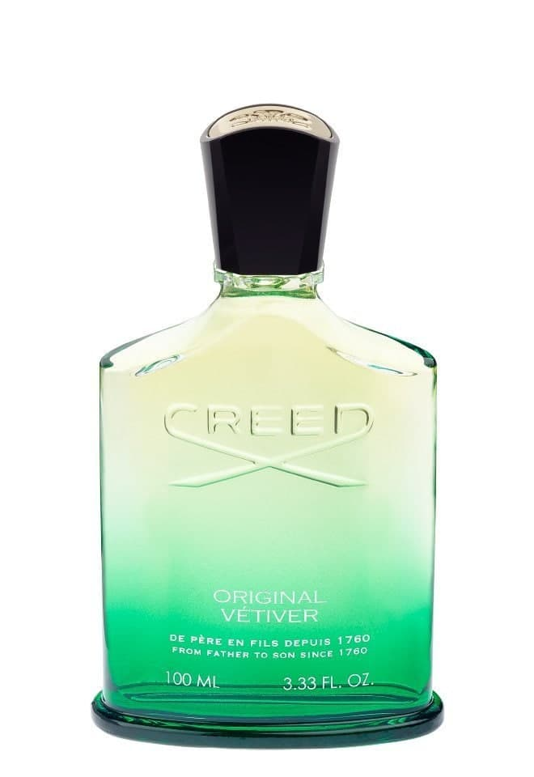
CREED
Original Vetiver perfume water, 100 ml
A pleasant balance of fresh greenery and sensual woody aromas. Vetiver from Haiti in the center, surrounded by sandalwood from Mysore, Florentine iris, musk and ambergris.
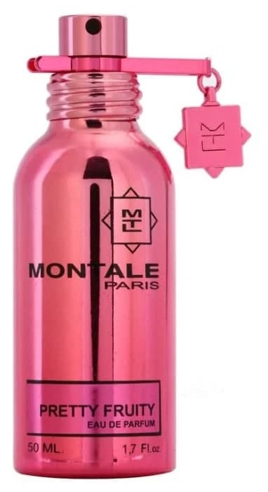
MONTALE
Pretty Fruity perfume water, 50 ml
Montale Pretty Fruity is a new, youth fragrance, released in 2011. It is addressed to passionate, self-expressing girls who love provocative outfits and extravagant hairstyles. This fragrance inspires cheerfulness and gives self-confidence, because nothing adorns a lady like a sincere smile and a perky laugh.The perfume composition of this fragrance consists of notes of sparkling citrus, fragrant black currant, passionflower, passion fruit, sensual musk
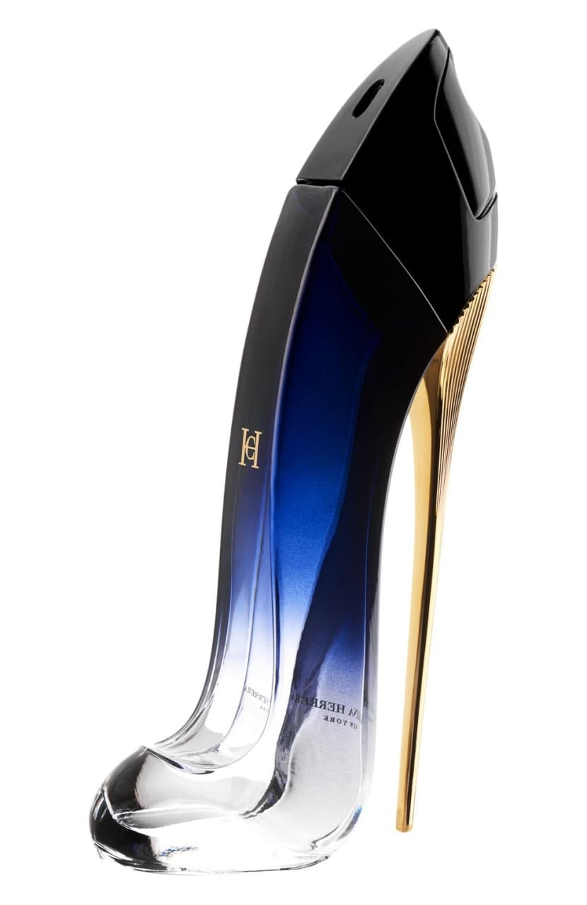
CAROLINA HERRERA
Perfume water GOOD GIRL Legere, 50 ml
Carolina Herrera celebrates the independence of women by presenting the fragrance Good Girl Eau de Parfum Légère.
The floral oriental fragrance is based on an expressive combination of the iconic note of jasmine for the Carolina Herrera house and the captivating sound of tonka beans.
The combination of woody notes of sandalwood with floral notes of ylang-ylang and jasmine is both rich and refined.
Candied tonka bean absolute and creamy dulce de leche notes.
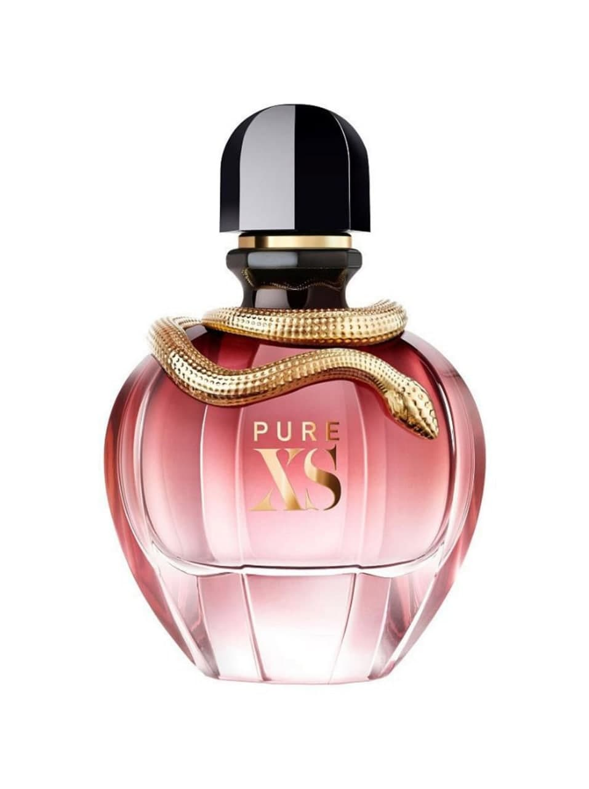
PACO RABANNE
Perfume water Pure Xs For Her 80 ml
The feminine fragrance Pure XS beckons, excites, heats up. The first impression is floral chords. Shining ylang-ylang with a hint of jasmine and vanilla petals. A piquant and intriguing combination. It remains only to trust your instincts. Next - a wave of passion: popcorn notes inflame emotions. Shades of musk and milk tree juice inflame the skin. The bottle, entwined with a snake with shimmering scales, is a genuine jewel. The bottle is the embodiment of excess. Provocative beauty. The personification of desire.
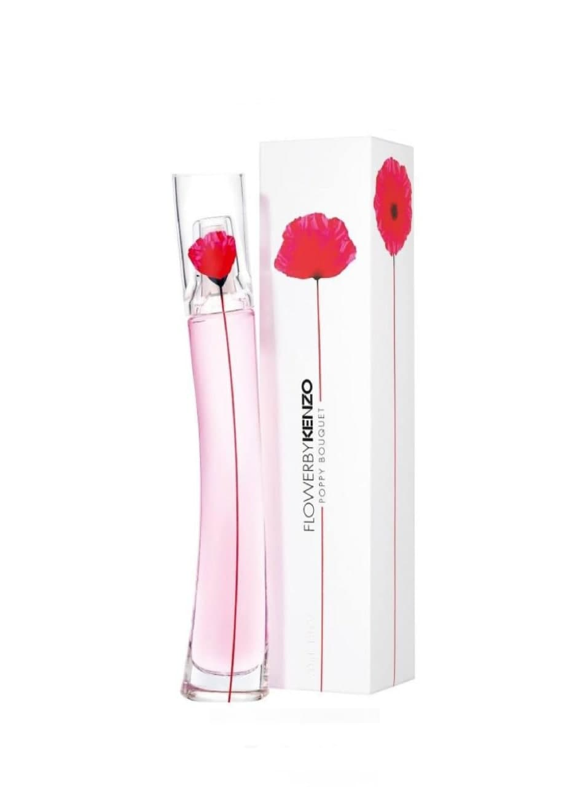
KENZO BEAUTY
Perfume water Flower By Kenzo Poppy Bouquet, 30 ml
The new perfume water FLOWER BY KENZO POPPY BOUQUET, a new story from KENZO that makes the world more beautiful. A harmonious, juicy and bright bouquet inspired by the beauty of the flower in its palette of shades.
An emphatically feminine floral arrangement.
Top notes: Our Pear
Heart notes: Bulgarian Rose, Gardenia
Base notes: Almond tree
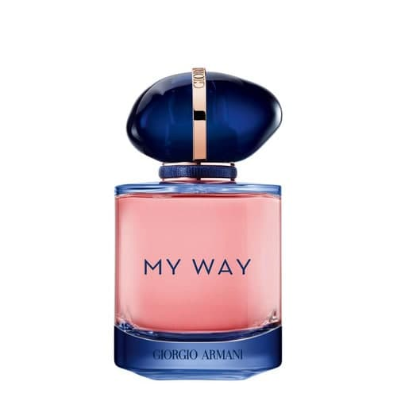
GIORGIO ARMANI
Perfume Water My Way Intense, 50 ml
The fragrance MY WAY, which appeared in 2020, became the embodiment of a new understanding of femininity - deep, complex and at the same time imbued with the spirit of freedom. In 2021, Giorgio Armani is creating a new chapter in the history of MY WAY - the fragrance MY WAY INTENSE, an even richer, luxurious interpretation of the signature floral notes of the original fragrance, which calls on all of us to live a full, rich life. MY WAY INTENSE is like a sensual talisman: its rich aroma makes every meeting and every event in life even more vivid and unforgettable.
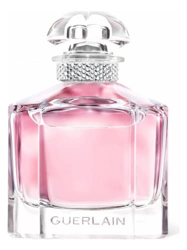
GUERLAIN
Mon Guerlain Sparkling Bouquet Perfume water, 50 ml
A light-filled scent that reimagines the iconic duo of lavender and vanilla, paired with a luminous pear note and vibrant Sambac jasmine.
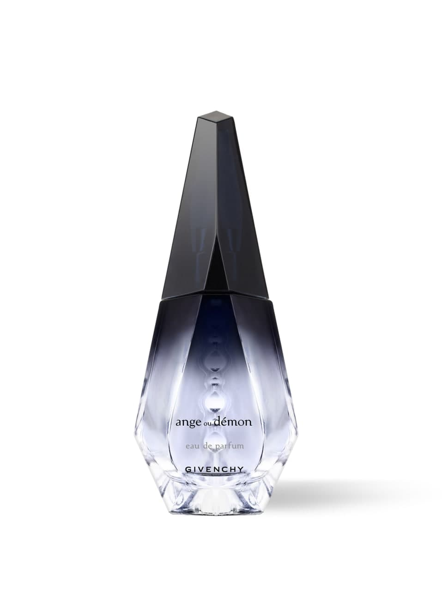
GIVENCHY BEAUTY
Ange Ou Demon perfume water, 50 ml
Givenchy's Ange ou Demon women's perfume water is a luxurious, bright oriental floral fragrance. Delicate notes of Mandarin and Lily are exquisitely complemented by a sensual trio of Saffron, absolute Oak and Rosewood. The fragrance represents the real DNA of Givenchy - French style, elegant chic, playful spontaneity and a truly aristocratic soul.